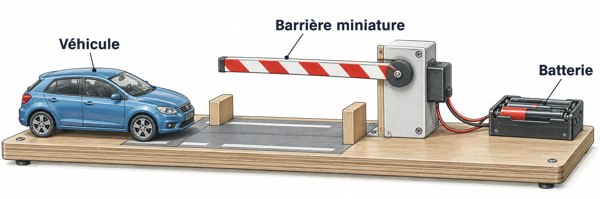

OBSERVER · EXPÉRIMENTER · EXPLIQUER
Une barrière miniature
Explore la position d’une barrière au fil du temps, avec un passage libre ou occupé.

✎ Garde ta feuille à côté de toi.Ordinateur : manipulations et mesures simulées. Papier : relevés, réponses, calculs et croquis.
Q1 · Repérer ce qui commande la barrière
Le bouton demande l’ouverture. Le moteur fait pivoter la barrière. Le capteur indique si le passage est occupé. Sur ta fiche, relie chaque élément à sa fonction.
Q2 à Q4 · Trouver et corriger le défaut
Q2 : teste « après le délai » avec un passage occupé. Q3 : écris la nouvelle règle, puis choisis « avec le capteur ». Q4 : teste les trois situations de ta fiche.
Après l’appui, déplace le curseur pour observer 3 s puis 5 s. Chaque graduation correspond à une seconde.
Sur ta feuille
Garde tes réglages, tes résultats et tes explications dans l’ordre des questions.